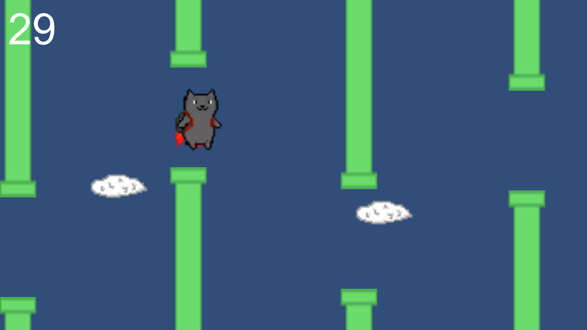
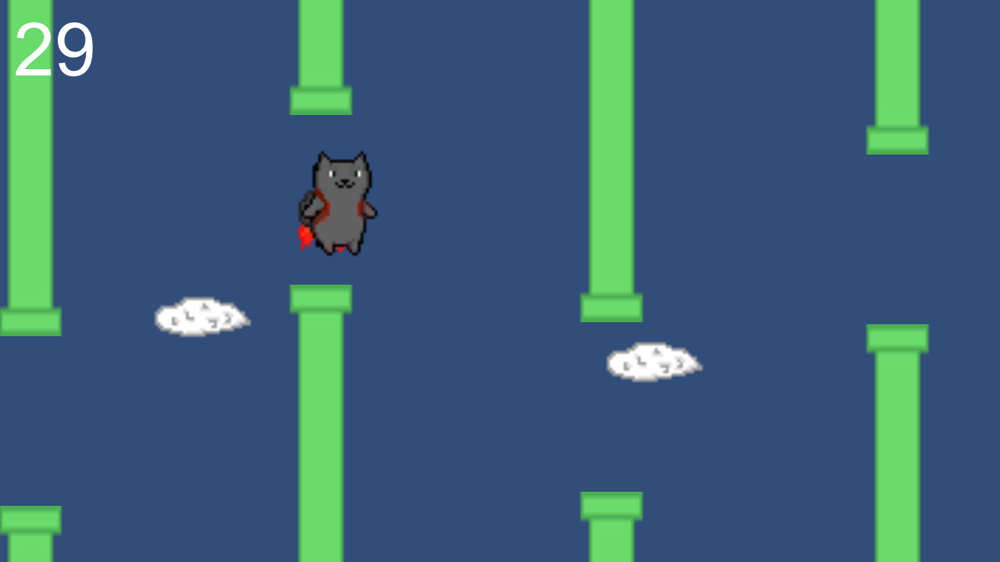

Description
J'ai réalisé ce projet lorsque j'apprenais le développement de jeux vidéo avec Unity. C'est un jeu similaire à Flappy Bird, mettant en scène ce sympathique chat nommé Augustin qui doit passer entre les tuyaux se précipitant vers lui.
J'ai réalisé ce projet lorsque j'apprenais le développement de jeux vidéo avec Unity. C'est un jeu similaire à Flappy Bird, mettant en scène ce sympathique chat nommé Augustin qui doit passer entre les tuyaux se précipitant vers lui.
On n'a pas de jeu vidéo sans visuels, ainsi j'ai réalisé différents sprites (images) en pixel art avec Pixilart.
Donner vie à l'idée, en utilisant unity et programmant les fonctionnalités en C#.
Ce fut évidemment la plus longue partie, il a fallu développer le déplacement et la physique d'Augustin, l'apparition aléatoire de
tuyeaux qui accélère avec le temps, la gestion du portail violet qui téléporte le personnage en avant, le score, les menus,
et d'autres...
Le gameplay était, prêt, mais il manquait des musiques et effets sonores pour rendre le tout plus "complet". N'ayant pas de compétences particulières en composition musicale, j'ai pu trouver mon bonheur sur Freesound.
Le moins que l'on puisse dire est que ce fut un projet enrichissant. J'ai appris à programmer en C#,
appréhendé le moteur de jeu qu'est Unity, et même fait du pixel art ! Il m'a donc fallu faire preuve de polyvalence, mais aussi
d'organisation.
Étant moi même un grand amateur de jeux vidéo, ce projet ainsi qu'un second de plus grande envergure
m'aide à comprendre le processus de création derrière les jeux qui me passionnent.
FlyingAugustin.zip